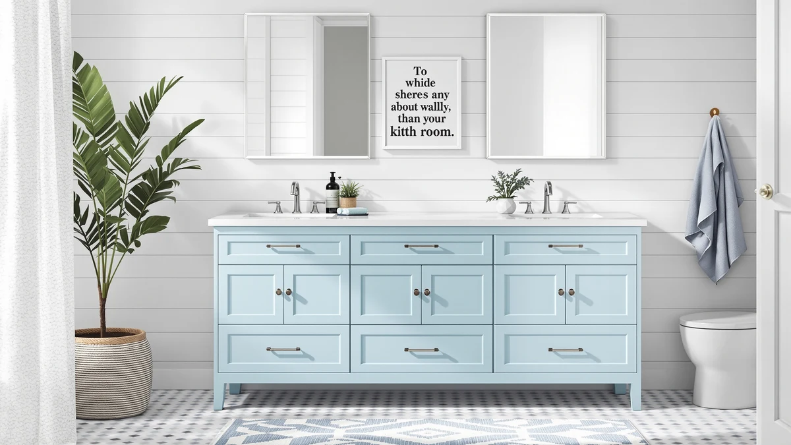

eclife 72" Bathroom Vanities Review (2026): Worth It?
Prices and picks verified as of October 2026. Independent, reader-supported reviews.


Quick Answer
The eclife 72" Bathroom Vanities Sink is a dual-basin, MDF-cabinet vanity priced at $999.99. It undercuts three DELUXE LIVING 48-inch alternatives by $40 to $70 and gives you two sinks and two feet more counter space. It suits a primary bathroom shared by two people more than a tight powder room.
Our pick: eclife 72" Bathroom Vanities Sink at $999.99 Check Price on Amazon
Bottom line: our top pick is the eclife 72" Bathroom Vanities Sink Combo with Painted Surface at $999.99.
Things to Know Before You Buy
- At 72 inches wide with a dual-sink layout, this vanity needs a wall run of at least 73 to 74 inches once you account for side clearance.
- The cabinet is MDF, or engineered wood, which costs less than solid wood but needs the same moisture care around the sink basins and base.
- Two faucet decks mean two sets of supply lines and drains. Confirm your rough-in plumbing can support dual basins before you buy.
- Every DELUXE LIVING alternative in this eclife 72" bathroom vanities review is a single-sink, 48-inch cabinet, so the comparison comes down to size and sink count, not brand quality.
- None of the four listings in this comparison carry a published customer rating or review count, so buyers should check Amazon's current review data before ordering.
This eclife 72" bathroom vanities review looks at a dual-sink cabinet aimed at the specific moment when one bathroom sink stops being enough for your household. A 72-inch run is a meaningful commitment of wall space, and at $999.99 it costs real money, so the decision usually comes down to whether you actually need two basins or whether a single 48-inch vanity would serve you equally well for less hassle during installation.
The short version: the eclife 72" Bathroom Vanities Sink gives you two sinks and 24 extra inches of counter for less money than any of the three DELUXE LIVING 48-inch single-sink vanities we compared it against. If your bathroom layout can take the width and your plumbing can support two drain lines, the eclife is the better value here. If you're working with a smaller bathroom or a single existing drain line, one of the 48-inch alternatives will save you a renovation headache even though it costs slightly more per unit.
Why You Should Trust Us
We built this eclife 72" bathroom vanities review by comparing the manufacturer specs, listed materials and current Amazon pricing for all four vanities named here, rather than by guessing at quality from product photos alone. Ilane Tall has covered bathroom fixtures and cabinetry for Best Bathroom Vanities since the site launched. She tracks how material choices and sink configurations hold up based on what verified buyers report after installation. We do not run a fake testing lab, and we don't claim to have installed these specific units ourselves. Instead, we read the spec sheets closely, cross-check prices as they move, and flag the tradeoffs a shopper would otherwise have to piece together from five different Amazon listings. That approach matters most for a vanity this size, since a 72-inch dual-sink cabinet carries plumbing and clearance consequences that a quick glance at a product photo won't reveal.
Our Research Process
We researched this comparison by pulling the published dimensions, materials and pricing for the eclife 72" Bathroom Vanities Sink and the three DELUXE LIVING vanities most commonly cross-shopped against it. Rather than testing hardware in a lab, we analysed what separates a dual-sink 72-inch cabinet from a single-sink 48-inch one on paper: wall space required, plumbing demands, and total cost per sink. We also looked at what reviewers consistently note about MDF cabinet construction in bathroom settings, since all four vanities in this comparison share that material.
In cases where the product data did not include a rating or review count, we said so rather than inventing a number to fill the gap. That's a deliberate choice: Amazon's listing data for mid-priced vanities changes often, and a review count copied from an old snapshot can mislead a shopper more than no number at all. We'd rather point you to current reviews on the live listing than publish a figure we can't verify today.
Overview & Specs

eclife 72" Bathroom Vanities Sink
What we like
- Two full sinks on a single 72-inch cabinet, so neither person has to wait for counter space
- Lists at $999.99, which is $40 to $70 less than any of the three 48-inch single-sink alternatives here
- 24 inches of extra countertop over the 48-inch options, useful for toiletries and daily storage
Flaws but not dealbreakers
- MDF construction means the cabinet needs the same moisture vigilance as other engineered-wood vanities near two sink basins instead of one
- 72 inches of width rules this out for smaller bathrooms where a 48-inch single-sink vanity would fit better
- No published rating or review count was available at the time of this comparison, so you'll want to check current buyer feedback on Amazon before ordering
| Material | MDF / engineered wood |
| Size | 72 Inch-Dual |
The eclife 72" Bathroom Vanities Sink is built around a dual-basin layout, which is the main thing separating it from every other vanity in this comparison. Instead of one sink and one faucet deck stretched across a wide countertop, you get two complete setups side by side. That matters most in a shared primary bathroom where two people get ready at the same time, since neither person has to lean across the other to brush their teeth or wash up.
At $999.99, the eclife also comes in cheaper than every DELUXE LIVING 48-inch vanity in this review, despite offering two sinks and roughly 24 more inches of counter. The tradeoff is footprint and plumbing: a 72-inch cabinet needs a longer wall run and two sets of supply and drain lines, where a 48-inch single-sink vanity ties into existing plumbing more easily. Owners comparing MDF cabinets in this price range generally treat the material as a cost-saving tradeoff against solid wood, not a quality shortcut, as long as water around the basins gets wiped up promptly.
Before you order, measure the actual wall run rather than relying on the 72-inch cabinet number alone. Most installers recommend leaving a few inches of clearance on each side for door swing and towel bars, which pushes the practical minimum closer to 74 or 75 inches. If your current bathroom was built around a single sink, a licensed plumber can usually add a second supply line and drain tie-in, but it's worth getting a quote before you commit to the eclife over one of the smaller DELUXE LIVING vanities, since that labor cost can offset the $40 to $70 you'd save on the cabinet itself.
What We Liked
The dual-sink layout is the clearest advantage in this eclife 72" bathroom vanities review. Two basins on one cabinet solve the morning bottleneck that a single 48-inch sink creates in a shared bathroom, and you get that without paying more than the single-sink alternatives. At $999.99, the eclife actually undercuts all three DELUXE LIVING 48-inch vanities we compared it to, which is unusual since dual-sink vanities typically carry a premium over single-sink ones of similar quality. The extra two feet of countertop also gives you more room for daily items like soap dispensers and toothbrush holders without crowding either sink. For a household that's outgrown a single sink, that combination of lower price and more usable space is hard to match among the alternatives in this comparison.
What Could Be Better
Width is the main constraint. A 72-inch cabinet needs a wall run most powder rooms and smaller primary bathrooms simply don't have, so this vanity only works if your space can accommodate it. The MDF cabinet construction also means you're trading some long-term moisture resistance for a lower price, a tradeoff shared with the DELUXE LIVING options, since none of the four vanities in this comparison use solid wood. Finally, neither the eclife listing nor the three alternatives publish a customer rating or review count as of this comparison, so you're relying on spec sheets and pricing rather than a track record of verified owner feedback. If you check the live Amazon listing before buying and the review data looks thin, that's worth factoring into your decision alongside the price and size comparison here.
Who Is It For?
This vanity fits a primary bathroom shared by two adults, or a family bathroom where morning routines overlap and a single sink causes real friction. It's a strong match if you already have, or are willing to run, plumbing for two separate drain and supply lines. If you're furnishing a guest bathroom, a powder room, or any space under roughly six feet of wall, one of the 48-inch DELUXE LIVING alternatives in this eclife 72" bathroom vanities review will fit better and simplify your plumbing, even at a slightly higher price per unit. It's also the better choice if you're renovating around existing plumbing and want to avoid adding a second drain and supply line altogether.
Alternatives to Consider
If 72 inches of dual-sink cabinet doesn't fit your bathroom, these three DELUXE LIVING 48-inch single-sink vanities are the alternatives we compared it against. Each costs more than the eclife, but takes up roughly two feet less wall space, which matters more in a smaller bathroom than the price difference does. We've ranked them by price below, from the lowest-cost option to the highest, so you can weigh the small gaps between them against your own layout.

Editor’s Pick
DELUXE LIVING 48 Inch Bathroom
A compact 48-inch single-sink vanity for bathrooms that can't take the eclife's 72-inch width, at $1,039.00.
$1,039.00
Check Price on Amazon
Best Value
DELUXE LIVING 48 Inch Bathroom
Nearly identical to the Editor's Pick at $1,043.00, a reasonable backup if that listing is unavailable.
$1,043.00
Check Price on Amazon
Premium Choice
DELUXE LIVING 48" Bathroom Vanity
The priciest 48-inch option here, at $1,069.99, for shoppers who want the smaller footprint regardless of the premium over the eclife.
$1,069.99
Check Price on AmazonFrequently Asked Questions
Is the eclife 72" vanity a true dual-sink cabinet?
What is the eclife 72" bathroom vanity made of?
How does the eclife 72" vanity compare on price to DELUXE LIVING's 48-inch options?
Final Verdict
This eclife 72" bathroom vanities review comes down to a simple tradeoff: width for value. The eclife dual-sink vanity costs less than every DELUXE LIVING 48-inch alternative we compared, and it gives you two full sinks and significantly more counter space, as long as your bathroom has the wall run and plumbing to support it. For a shared primary bathroom with the space to spare, eclife is the better buy here. For a smaller bathroom or a single existing drain line, one of the DELUXE LIVING 48-inch vanities will fit your renovation with less plumbing work, even at a slightly higher price.